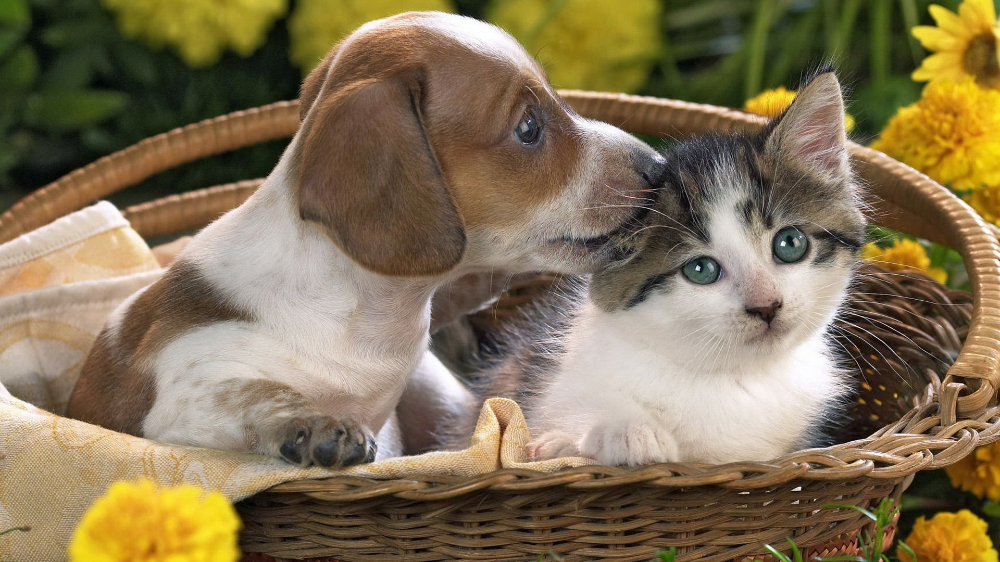
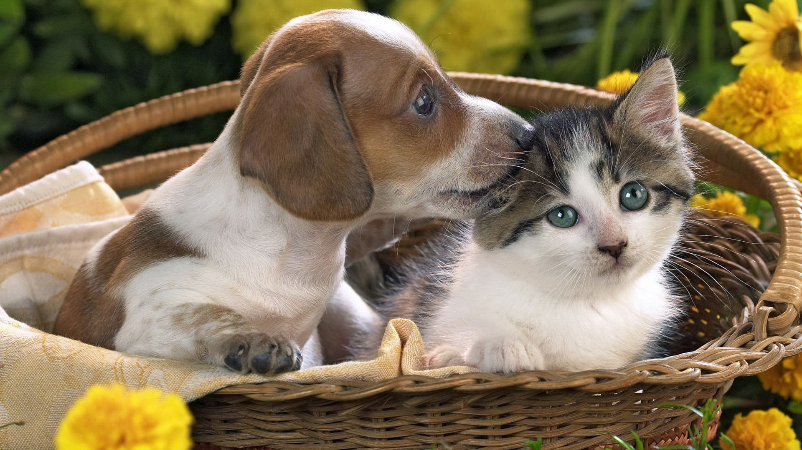

Why Adopt?
Have you considered adopting a pet? Adopting a pet is a great way to get a new family member and our agency is a great place to start. We have a variety of pets available for adoption, such as cats, dogs, and a few other animals. Most of these animals were rescued from bad situations and are looking for a new home. They're receiving the love and care they deserve.
We hope you'll consider adopting a pet from us.